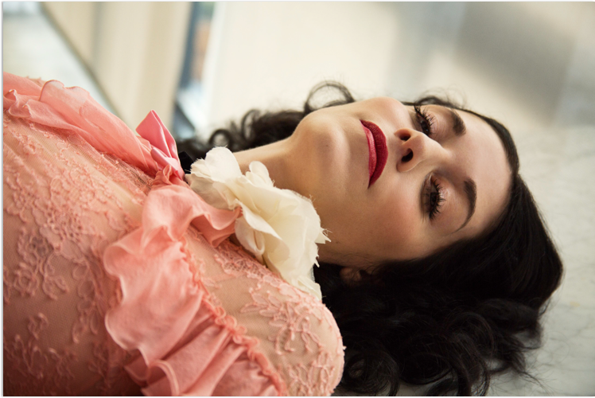
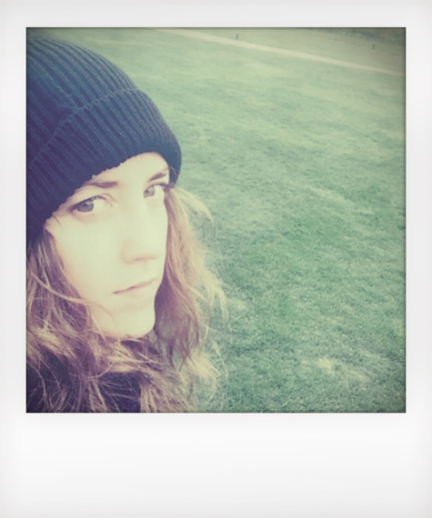

Calandar+


Week 27 — August 15, 2017

Louise O’Neill
Author
6 minute read

In Conversation
Louise O’Neill is an Irish author, columnist, and documentary presenter. After time spent working at ELLE in New York, she returned home and wrote her first YA book, Only Ever Yours. Taking a sharp and disturbing look at body image via a dystopian world where women are judged purely on appearance, it has since been optioned as a film. Her second book, Asking for It, was a brutal (and truthful) examination of rape culture and social media. Both have been widely acclaimed, winning numerous awards. She is currently working on her third book. Here, she discusses writing habits, reading lists, being honest, and why you should never apologise for loving clothes.
Hello! So to begin— I’m curious if there any writers you’re currently excited about, that you’ve been reading or writing about recently? Or even just thinking about?
 It’s funny. When I’m writing fiction I tend to read mainly non-fiction or poetry. I loved Trainwreck by Sady Doyle. What else? Jessica Valenti’s Sex Object, and The Good Immigrant edited by Nikesh Shukla, which I really liked. Also You’ll Grow Out of It. That’s a set of essays by Jessi Klein. I was really very impressed by that. I thought it was funny and smart.
With poetry, there’s been lots of Nayyirah Waheed and Adrienne Rich. Also Preparing My Daughter For Rain by Key Ballah and the princess saves herself in this one by Amanda Lovelace. Just really random collections. Your Soul is a River by Nikita Gill, and Mouthful of Forevers by Clementine von Radics, too.
Oh, and one fictional book— Homegoing by Yaa Gyasi. It’s just fantastic. Fourteen interconnecting stories starting off in Africa and ending up in Harlem in New York, examining the roots of slavery and how those have contributed to institutionalised racism in the US. A really special book. I absolutely adored it.
As I said, when I’m writing, though, it’s just too easy when reading a lot of fiction to either get disheartened and end up going, “God, this book is so much better than the one I’m writing,” or to feel that you might start emulating someone else’s voice.
Yes, I think there’s also something to those forms — not that they’re digestible, exactly, but you can take them essay-by-essay, or poem-by-poem. Mediums you can commit to in short bursts.
Yes. And I find when I do have to read, a lot of the time it’s because it’s a book someone has sent to me. It’s like, you know when you are at school and you’re obliged to read something? It can take away some of the sense of enjoyment, like the reading is a bit of a chore. I hate that, because it’s such an incredible pleasure for me. It’s always been an escape. As a child, books were my friends. Not because I was bullied or isolated or anything, but they were just… so interesting and compelling and engaging.
Oh! Another book: I’ll Eat When I’m Dead by Barbara Bourland. That’s coming out in May. Bitingly funny and brilliantly subversive. It’s like The Devil Wears Prada meets American Psycho. You know that way when you find a weird, off-kilter book you love?
It’s funny. When I’m writing fiction I tend to read mainly non-fiction or poetry. I loved Trainwreck by Sady Doyle. What else? Jessica Valenti’s Sex Object, and The Good Immigrant edited by Nikesh Shukla, which I really liked. Also You’ll Grow Out of It. That’s a set of essays by Jessi Klein. I was really very impressed by that. I thought it was funny and smart.
With poetry, there’s been lots of Nayyirah Waheed and Adrienne Rich. Also Preparing My Daughter For Rain by Key Ballah and the princess saves herself in this one by Amanda Lovelace. Just really random collections. Your Soul is a River by Nikita Gill, and Mouthful of Forevers by Clementine von Radics, too.
Oh, and one fictional book— Homegoing by Yaa Gyasi. It’s just fantastic. Fourteen interconnecting stories starting off in Africa and ending up in Harlem in New York, examining the roots of slavery and how those have contributed to institutionalised racism in the US. A really special book. I absolutely adored it.
As I said, when I’m writing, though, it’s just too easy when reading a lot of fiction to either get disheartened and end up going, “God, this book is so much better than the one I’m writing,” or to feel that you might start emulating someone else’s voice.
Yes, I think there’s also something to those forms — not that they’re digestible, exactly, but you can take them essay-by-essay, or poem-by-poem. Mediums you can commit to in short bursts.
Yes. And I find when I do have to read, a lot of the time it’s because it’s a book someone has sent to me. It’s like, you know when you are at school and you’re obliged to read something? It can take away some of the sense of enjoyment, like the reading is a bit of a chore. I hate that, because it’s such an incredible pleasure for me. It’s always been an escape. As a child, books were my friends. Not because I was bullied or isolated or anything, but they were just… so interesting and compelling and engaging.
Oh! Another book: I’ll Eat When I’m Dead by Barbara Bourland. That’s coming out in May. Bitingly funny and brilliantly subversive. It’s like The Devil Wears Prada meets American Psycho. You know that way when you find a weird, off-kilter book you love?
Louise’s top 10..
Books
Oh yes. Talking of writing —what’s that process like for you?

With my first two books it was that complete immersion: dropping into myself, dropping into the story, dropping into the characters, just letting the outside world fade away. I mean, it doesn’t make me the easiest person to live with! But I just need to be chained to my desk. I need to be in that zone where the story is everything. Where it’s all I can think about, all I can talk about, daydream about. There’s nothing else.
Given that you write in that kind of isolation, do you find there’s a strange contrast in it being just you on your laptop creating, and then jumping into a whirl of social events and everything else? Or do you seamlessly move between the two?
God, I wish I could move seamlessly. You know, Asking for It came out in September 2015 and for more than a year, I felt I didn’t really stop: constant events, book tours, festivals, travelling all the time. Lots of it was necessary, and some of those opportunities that arose were very exciting. Things I wanted to do — like the No.7 campaign with Chimamanda Ngozi Adichie. I’m such a fan of hers. It was an honour to be involved and a privilege to get to meet her. But it isn’t very conducive to writing. With my third book I’d write for three days, then have to travel to an event, then return and recover and try to get back some sort of routine. It was a bit discombobulating.
Is that important to you, to be honest?
I’ve been accused, hilariously enough, of monetising my suffering. You know, I don’t particularly like telling people about all my difficult experiences. It can be quite re-traumatising. But I do it because I feel it’s so important to be open around issues like mental health, especially where there’s still such a culture of shame and silence attached. But again, as I said, it does take something from you. I’m trying to balance that at the moment: being authentic, but not cutting my veins open for public entertainment, if that makes sense. I think if it’s cathartic it can be healing, but it’s about protecting yourself and knowing you have to be strong to be vulnerable. It’s about learning to navigate that.
Yes, and working out where you sit between the public and private. To go back to the Chimamanda point, I also really like the fact that you’re one of those people who advocates what some might call ‘brains and beauty’ but what I prefer to label as ‘being able to have intellect and also enjoy clothes’. I think you marry the two really beautifully. I was wondering if you had anything particular to say about that?
Sarah Sophie Flicker talks shape-shifting, image-making and what it means to be political with activist and writer Michaela Angela Davis. The two long-time friends discuss the current state of affairs, and having a lot of work to do.
I said this during my conversation with Chimamanda, actually. I think my relationship with fashion and with make-up has changed a lot. I used to love it as a child. It was dress up, a way of expressing my creativity. I loved drama and performance and the idea of inhabiting someone else’s world or mind. Clothes and costume were an extension of that. Then, as a teenager, when I became more self-conscious, fashion and make-up were a way of both disguising my true self, and also fitting in.
I could see that when I was working in the fashion industry, too. I don’t speak for everyone in fashion because I don’t think that’s fair or appropriate, but I know that when I was in New York there was this sense of everyone watching each other and wanting to be better. Really this came, for me, at least, from a sense of feeling like I wasn’t good enough. When I came home from New York I rejected all that, saying that fashion was a facet of the patriarchy, a means of controlling women. And then I came around AGAIN. I’d read a piece by Chimamanda in, I think, Elle?
I could see that when I was working in the fashion industry, too. I don’t speak for everyone in fashion because I don’t think that’s fair or appropriate, but I know that when I was in New York there was this sense of everyone watching each other and wanting to be better. Really this came, for me, at least, from a sense of feeling like I wasn’t good enough. When I came home from New York I rejected all that, saying that fashion was a facet of the patriarchy, a means of controlling women. And then I came around AGAIN. I’d read a piece by Chimamanda in, I think, Elle?

It was Elle! I love that essay so much.
It’s great. She’s so right. In it, she talks about the fact that she was interested in clothes and that when she came to the US she was worried she wouldn’t be taken seriously if she didn’t reject make-up and fashion. As she says, really that’s just another form of misogyny. Anything women have traditionally been interested in is rejected. You know, it’s a multibillion-dollar industry. But it’s interesting how often it’s still marginalised as ‘shallow’— whereas something like football, for example, has been elevated to an art form.
I’m very keen to express that women shouldn’t feel under pressure to wear certain clothes or put on make-up if they don’t want to. But I also think it’s important for women to know that if they do love fashion, they’re not failing as a feminist! It doesn’t make them superficial, it doesn’t make them shallow, it shouldn’t be something to be ashamed of. Now, I’m less swayed by trends or what’s ‘in’. It’s more about, I guess in the same way as when I was a child, the fun and the thrill I get when I find an outfit that I love. It’s something I enjoy. I’m not going to apologise for that anymore. I’m nodding very enthusiastically in agreement here. I was at a publishing party last Christmas wearing acid-wash jeans and a lace top, and someone came up to me and asked what I did. I said I was an author and they replied, “Well you don’t look like an author!” I was like, “What does an author look like?”. I just wanted to laugh. Basically, if you’re looking at the fact that I’m wearing a Kenzo dress or a pink velvet suit or whatever, and you’re judging me on that rather than judging me on my work — that says a lot more about you than it does about me.
I’m very keen to express that women shouldn’t feel under pressure to wear certain clothes or put on make-up if they don’t want to. But I also think it’s important for women to know that if they do love fashion, they’re not failing as a feminist! It doesn’t make them superficial, it doesn’t make them shallow, it shouldn’t be something to be ashamed of. Now, I’m less swayed by trends or what’s ‘in’. It’s more about, I guess in the same way as when I was a child, the fun and the thrill I get when I find an outfit that I love. It’s something I enjoy. I’m not going to apologise for that anymore. I’m nodding very enthusiastically in agreement here. I was at a publishing party last Christmas wearing acid-wash jeans and a lace top, and someone came up to me and asked what I did. I said I was an author and they replied, “Well you don’t look like an author!” I was like, “What does an author look like?”. I just wanted to laugh. Basically, if you’re looking at the fact that I’m wearing a Kenzo dress or a pink velvet suit or whatever, and you’re judging me on that rather than judging me on my work — that says a lot more about you than it does about me.
Louise’s Matches Wishlist
Interview — Week 25

Siri Thorson
Siri Thorson is a flower grower, florist, and writer. Known for her gorgeous, attentive arrangements and delectable Instagram @thelittlebanana, as well as her island home with its...
By Sarah Sophie Flicker
Read More
Interview — Week 26
Mercedes Helnwein
Mercedes Helnwein is a multitalented, multifaceted artist. Working across realms including oil paints, pencil sketches, film, photography, prose and more…
By Sarah Sophie Flicker
Read More